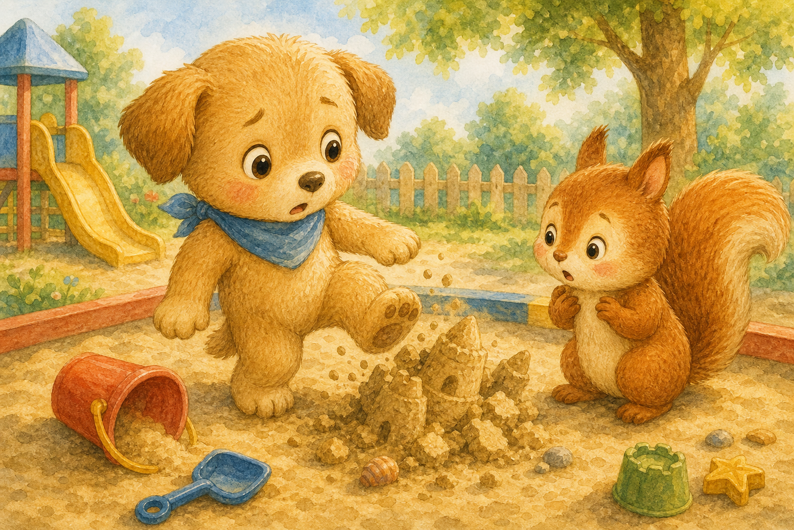
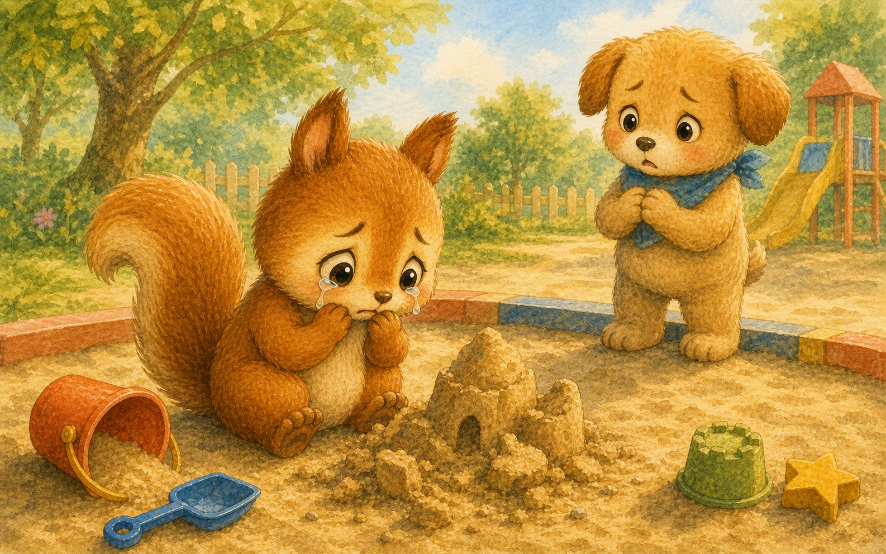
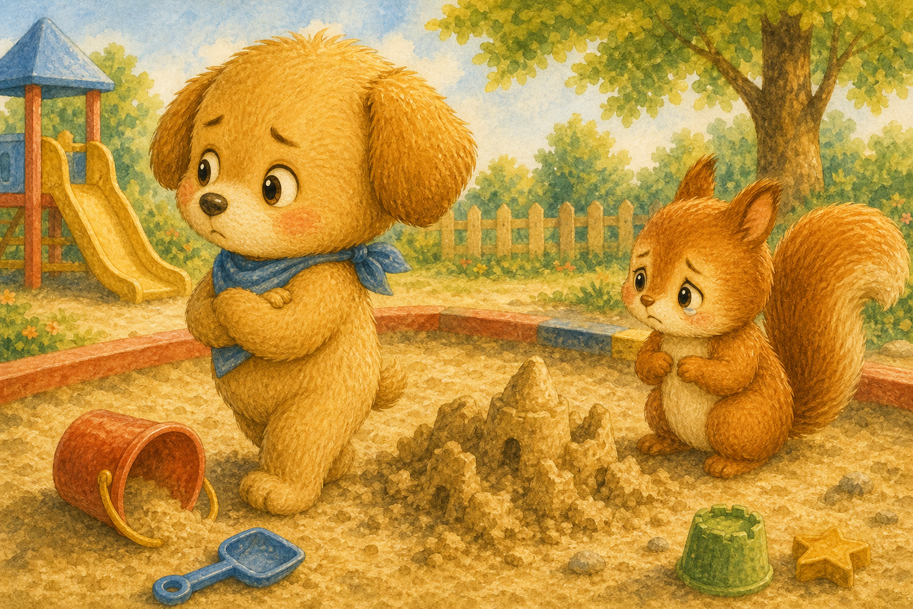
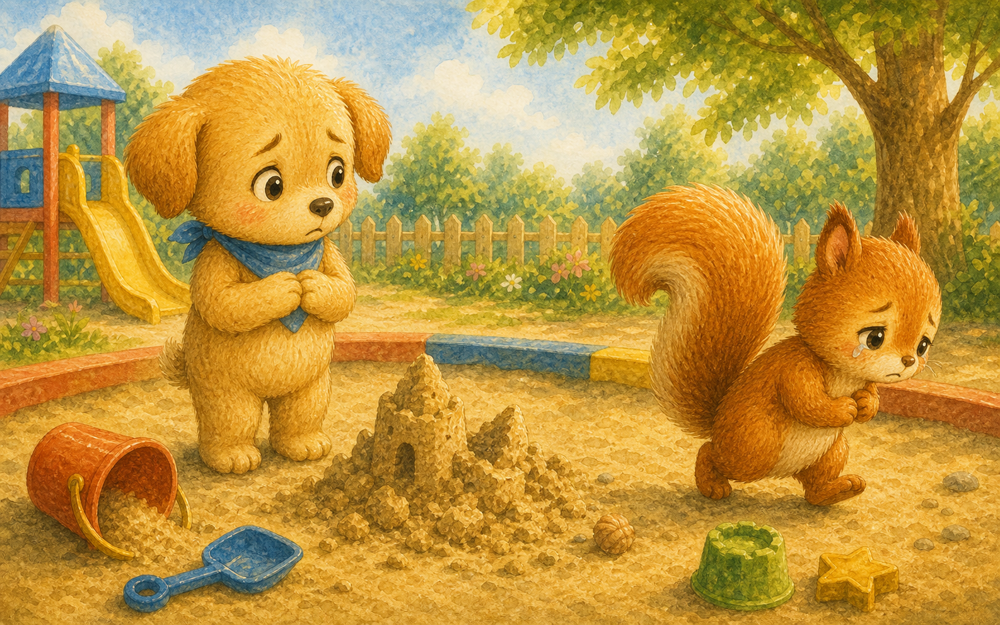
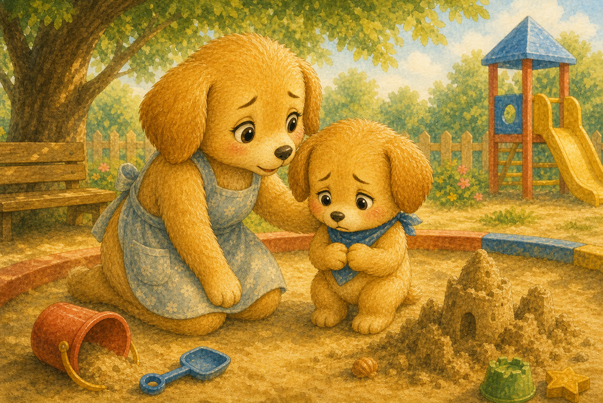
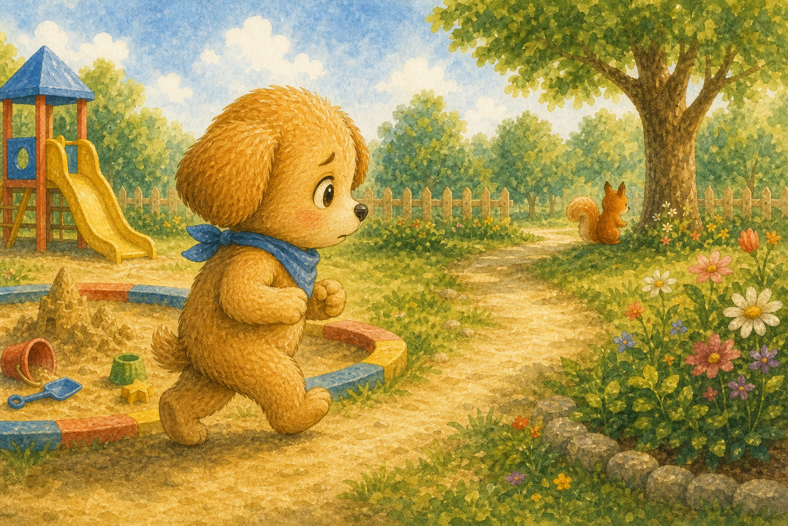
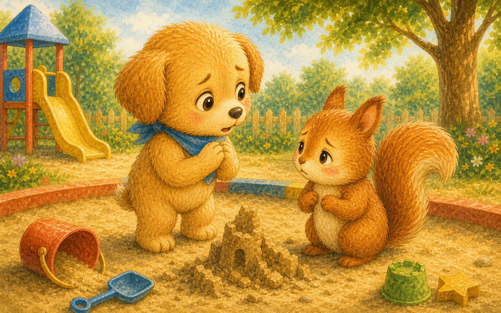
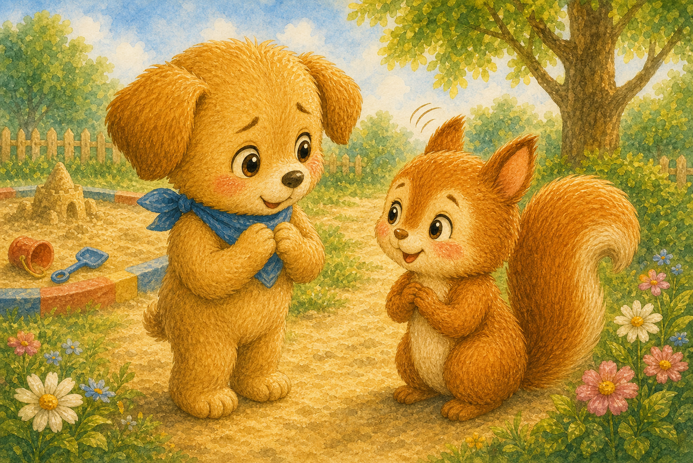
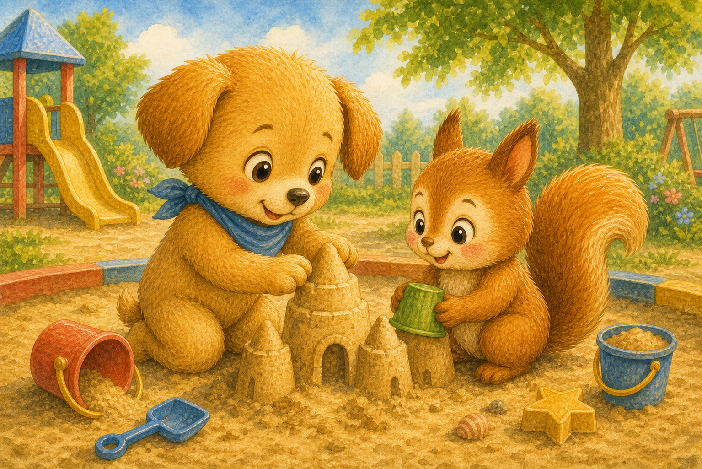
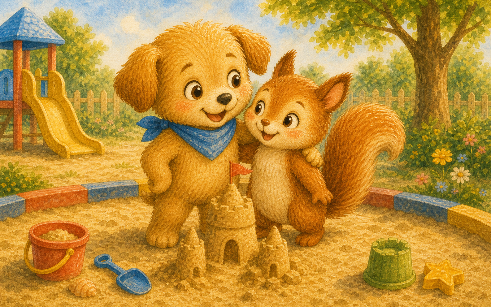

와르르 무너진 성
강아지 두두가 뛰어가다 친구 다람쥐의 모래성을 발로 차 버렸어요. 정성껏 쌓은 성이 와르르 무너졌지요.
"앗… 일부러 그런 건 아닌데."

강아지 두두가 뛰어가다 친구 다람쥐의 모래성을 발로 차 버렸어요. 정성껏 쌓은 성이 와르르 무너졌지요.
"앗… 일부러 그런 건 아닌데."

다람쥐는 무너진 성을 보며 눈물을 글썽였어요. 아침 내내 만든 소중한 성이었으니까요.
다람쥐의 어깨가 축 처졌어요.

두두는 괜히 부끄러워 모른 척 고개를 돌렸어요. "그냥 모래성인데, 뭐"라고 중얼거렸지요.
하지만 마음 한구석이 콕콕 따끔했어요.

다람쥐는 시무룩하게 자리를 떠났어요. 두두는 친구의 뒷모습을 바라보며 마음이 무거워졌지요.
"다람쥐가 많이 속상했나 봐."

엄마 강아지가 두두의 마음을 가만히 물었어요. 미안한 마음이 들면 그 마음을 전하면 된다고 했지요.
"미안할 땐 어떻게 하면 좋을까?"

두두는 용기를 내어 다람쥐를 찾아갔어요. 가슴이 콩콩 뛰었지만 꼭 사과하고 싶었답니다.
"다람쥐야, 잠깐 얘기해도 될까?"

두두는 다람쥐의 눈을 보며 또박또박 말했어요. 모래성을 망가뜨려서 정말 미안하다고요.
"내가 네 성을 무너뜨려서 미안해."

진심 어린 사과에 다람쥐의 마음이 스르르 풀렸어요. 다람쥐는 고개를 끄덕이며 괜찮다고 했지요.
"솔직하게 말해 줘서 고마워."

두두는 다람쥐와 함께 더 멋진 모래성을 쌓았어요. 둘이 만드니 성은 더 크고 튼튼해졌답니다.
"이번엔 같이 만드니까 더 멋져!"

두두는 진심으로 미안하다고 말하면 다시 친해질 수 있다는 걸 알았어요. 작은 사과가 큰 마음을 이어 주었지요.
"미안해, 이 한마디가 마법 같아!"